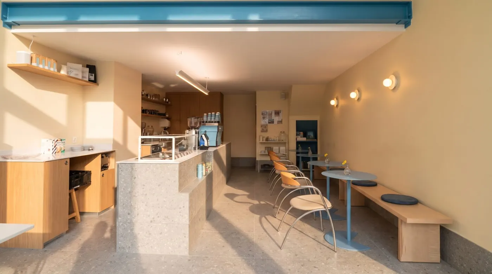
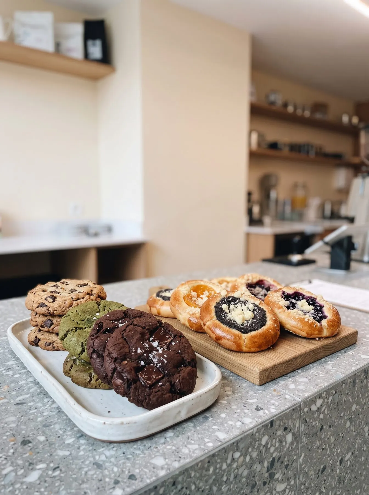
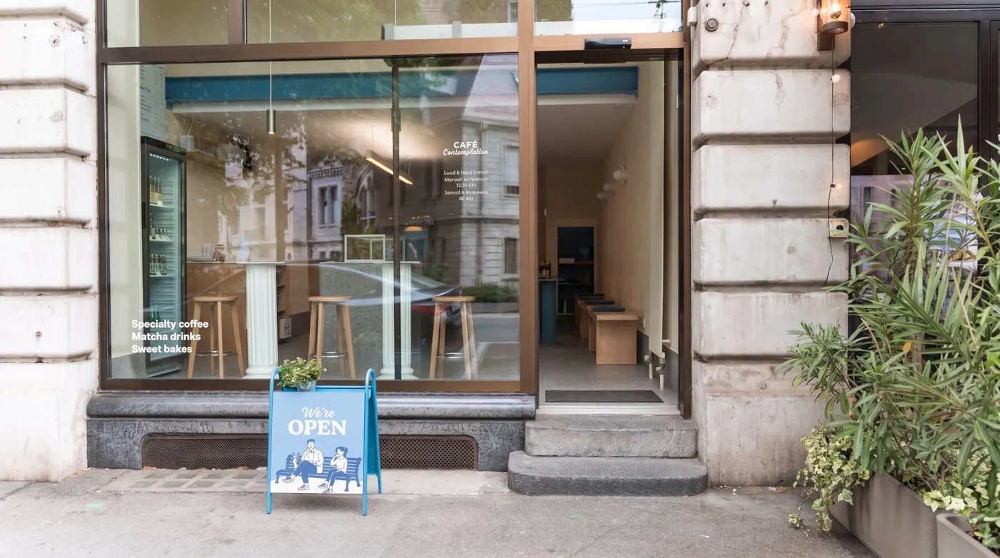
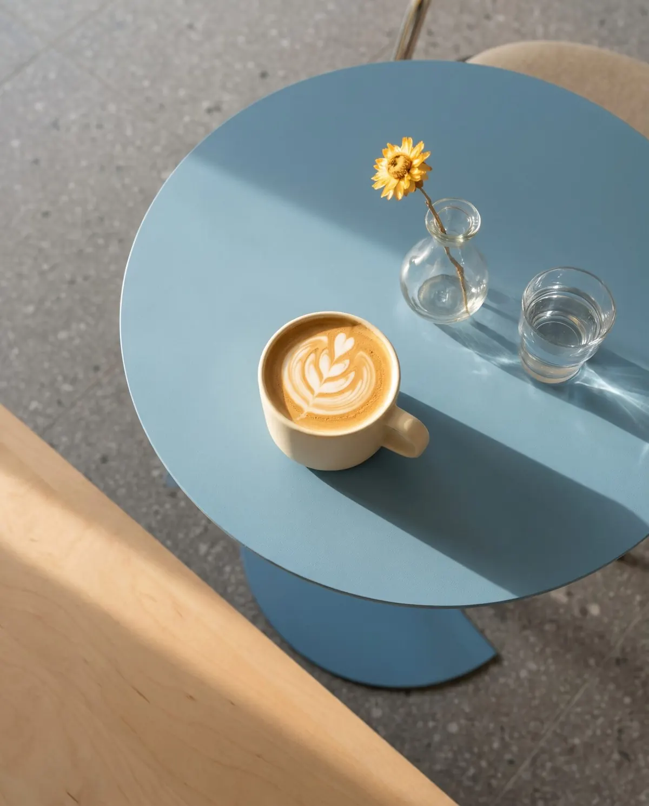
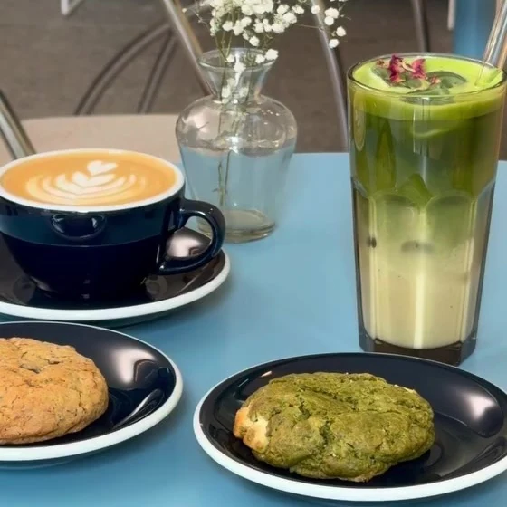
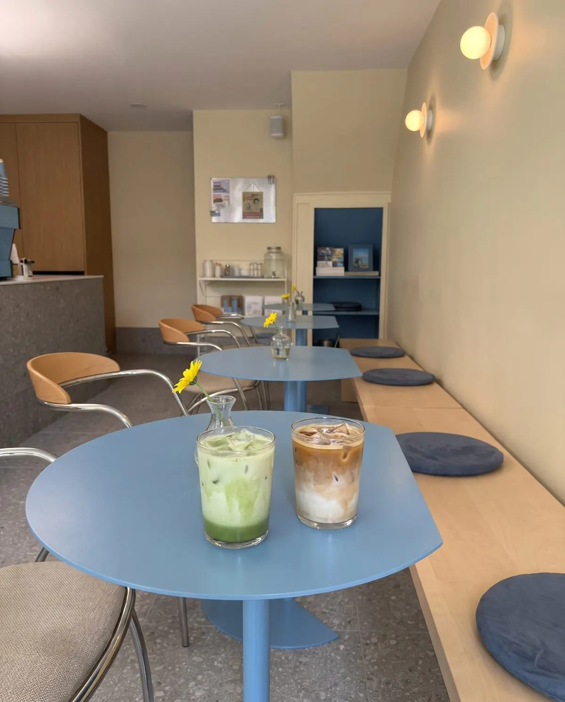
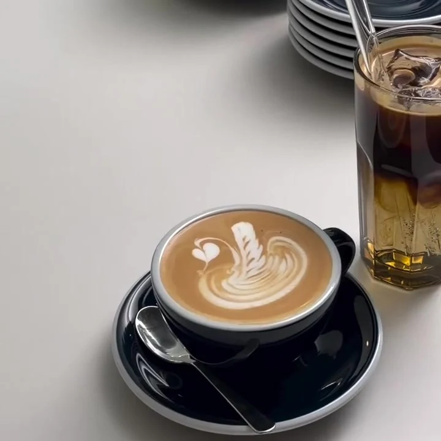

Horaires ci-dessous
Une pause au bord du lac, le temps d'un café.
Café de spécialité, matcha et douceurs maison à Ouchy, à deux pas du lac Léman à Lausanne.
Le café
D'un triporteur à Genève à une arcade à Ouchy
Tout a commencé en 2024 avec un coffee truck à Genève. En 2026, Adéla et Lloyd Arrigoni ont posé leurs tasses avenue d'Ouchy, dans une petite arcade claire : murs crème, comptoir en terrazzo, tables bleues et une dizaine de places.
Lloyd est derrière la machine, Adéla aux fourneaux, et Joey, le Boston Terrier de la maison, supervise l'ensemble.
On vient pour un flat white à emporter avant la baignade, ou pour s'asseoir et ne rien faire pendant un quart d'heure.

Specialty coffee
Tout commence par un grain.
Faites-le tourner du doigt ou à la souris.

Fait maison
Douceurs
En images
Le lieu, les tasses





Passez nous voir
Horaires & accès
Horaires